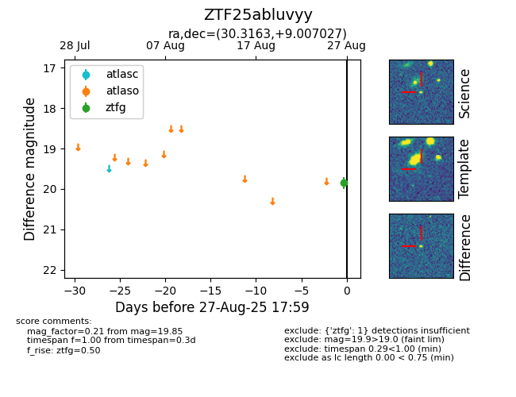

Target ZTF25abluvyy at 2025-08-27 11:29, see:
FINK: fink-portal.org/ZTF25abluvyy
Lasair: lasair-ztf.lsst.ac.uk/objects/ZTF25abluvyy
ALeRCE: alerce.online/object/ZTF25abluvyy
alt names
ZTF25abluvyy (ztf,fink)
coordinates:
equatorial (ra, dec) = (30.3163,+9.00703)
galactic (l, b) = (150.4406,-50.09799)
photometry
last ztfg=19.85
1 ztfg detections
